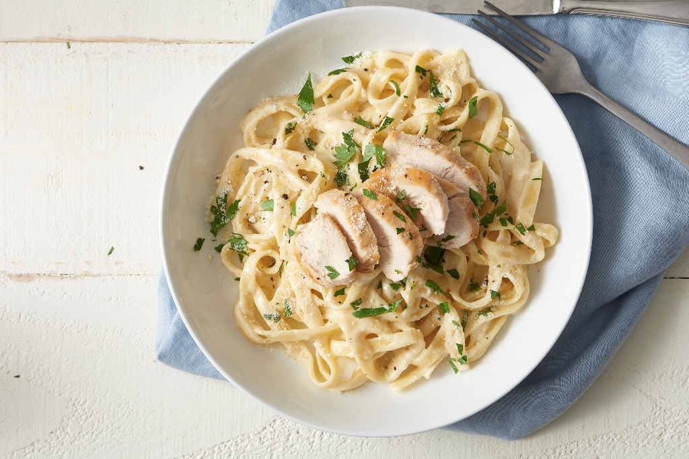
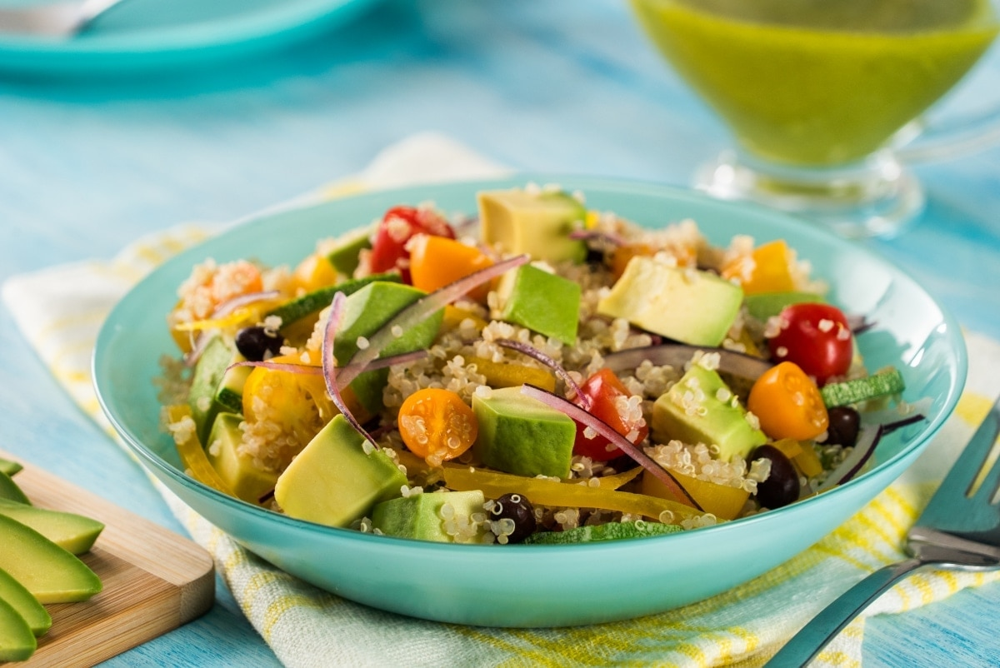
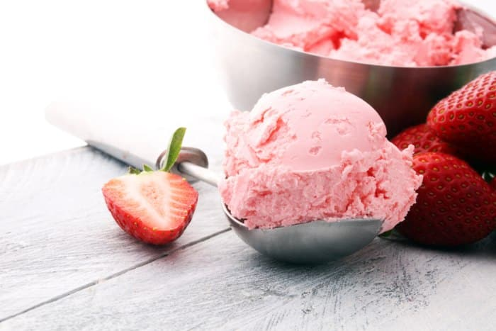

Recetas Saladas.

Pasta Alfredo.
Ingredientes.
- Pasta fettuccine.
- Pechuga de pollo.
- Crema de leche.
- Queso parmesano rallado.
- Ajo y mantequilla.
Paso de preparación.
- Cocina la pasta según las instrucciones del paquete.
- En una sartén, cocina el pollo en mantequilla y ajo hasta que esté dorado.
- En la misma sartén, agrega la crema de leche, el queso parmesano y revuelve hasta obtener una salsa cremosa.
- Mezcla la pasta cocida con la salsa de pollo.
- Sirve caliente y espolvorea queso parmesano adicional si lo deseas.

Ensalda de Quinoa
Ingredientes
- Quinoa cocida.
- Aguacate.
- Tomate cherry.
- Pepino.
- Cilantro fresco.
- Aderezo de limón..
Pasos de Preparación:
- Combina la quinoa cocida, aguacate en cubos, tomates cherry cortados a la mitad y rodajas de pepino.
- Agrega cilantro fresco picado.
- Riega con aderezo de limón y mezcla bien.
- Sirve como acompañamiento fresco y saludable.
Recentas Dulces.

Brownie de Chocolate.
Ingredientes
- harina.
- Cocoa en polvo.
- Azúcar.
- Huevos.
- Mantequilla.
- Esencia de vainilla.
- Nueces (opcional).
Pasos de Preparación:
- Mezcla harina, cacao en polvo y azúcar en un tazón.
- Agrega huevos y mantequilla derretida. Mezcla hasta obtener una masa suave.
- Añade esencia de vainilla y nueces (si prefieres).
- Vierte la mezcla en un molde y hornea según las indicaciones.
- Deja enfriar antes de cortar en porciones.

Helado de fresa casero.
Ingredientes:
- fresas frescas.
- Azúcar.
- Leche.
- Crema de leche.
Pasos de Preparación:
- Mezcla fresas frescas con azúcar y tritura para obtener un puré.
- En un tazón aparte, mezcla leche y crema de leche.
- Combina el puré de fresas con la mezcla de leche y crema.
- Vierte la mezcla en una máquina de helados o en un recipiente para congelar.
- Congela hasta que esté firme y sirve.